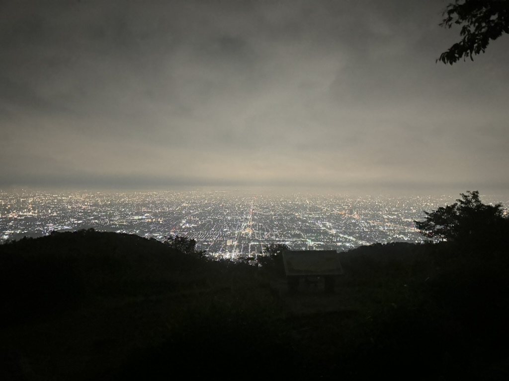
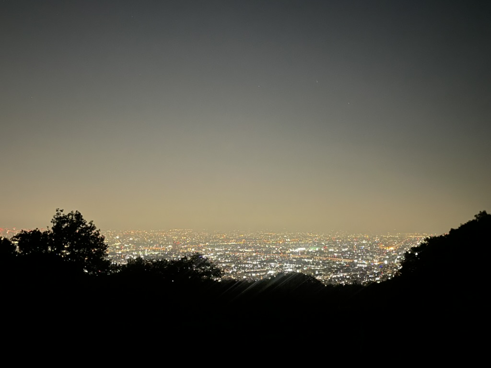
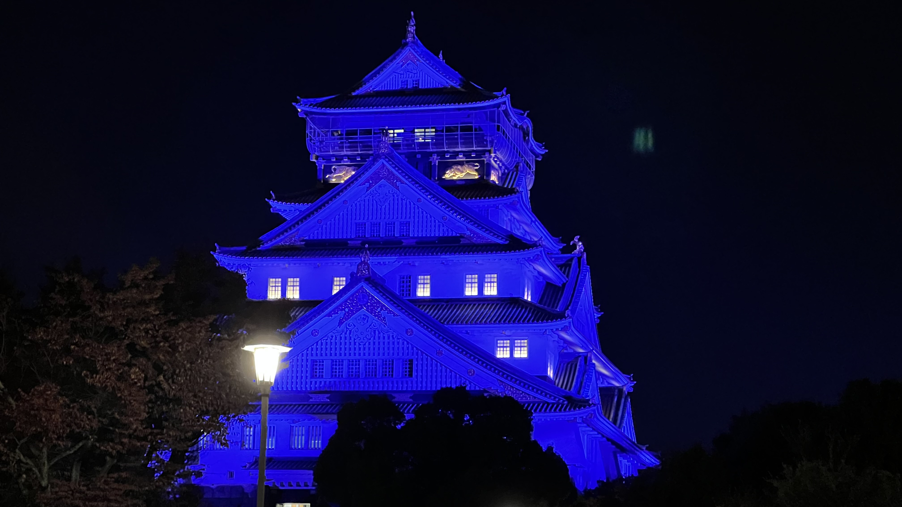

大阪の夜景スポット
大阪には美しい夜景スポットがたくさんあります。ここでは代表的なスポットを紹介します。
彩都なないろ公園

彩都なないろ公園は、静かな環境で夜景を楽しめる場所です。公園内には遊歩道があり、ゆったりとした時間を過ごせます。
五月山 五月平展望台

五月山の五月平展望台からは、大阪市内を見渡す素晴らしい夜景を楽しめます。特に夜景が美しいスポットです。
生駒山 僕らの広場
生駒山の「僕らの広場」からは、関西圏を一望できる美しい夜景を楽しめます。
十三峠展望台
十三峠展望台は、大阪府と奈良県を繋ぐ位置にあり、山々を背景に美しい夜景を堪能できるスポットです。
大阪城
大阪城は歴史的な背景を持ち、夜景も美しく、ライトアップされた城を眺めることができます。
水呑地蔵院

水呑地蔵院は、歴史ある寺院と静かな環境が魅力の夜景スポットです。特に本堂がライトアップされる夜には、幻想的な雰囲気を楽しむことができます。